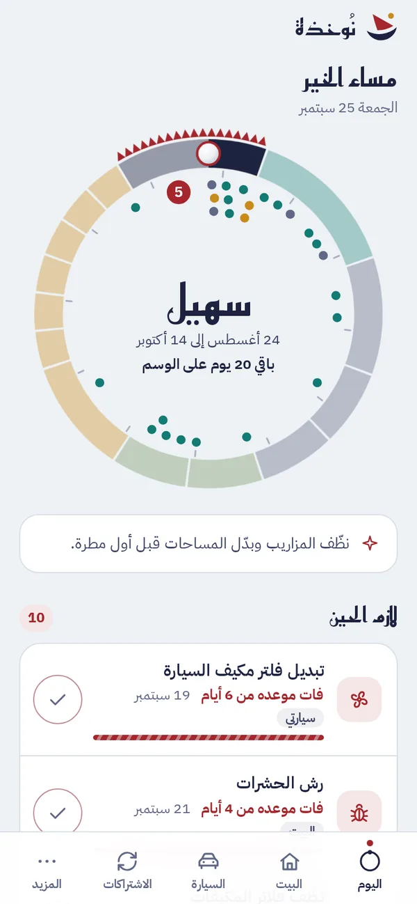
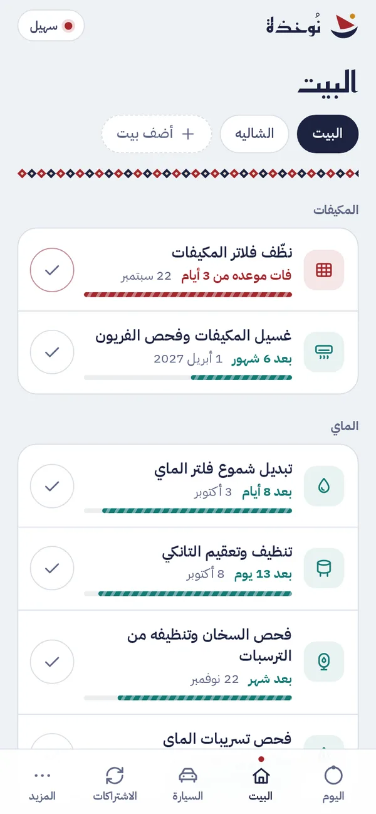
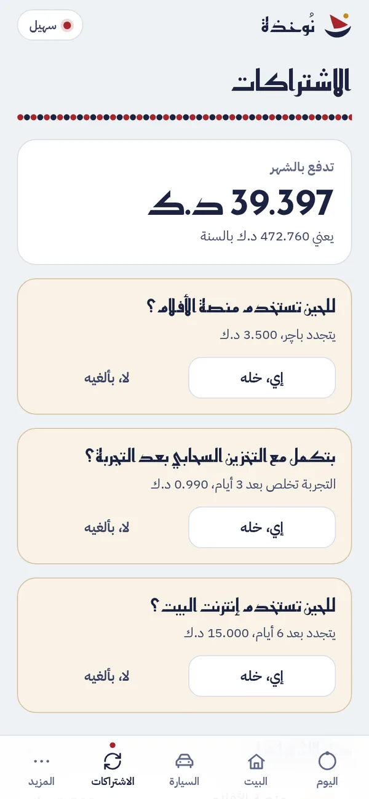

البيت
فلاتر المكيفات كل شهر وكل أسبوعين بالبوارح، وغسيل المكيفات قبل الصيف، والتانكي والفلتر والسخان والسطح والشفاط والحشرات وكاشف الدخان والطفاية، ولكل بيت أو شاليه أو مزرعة قائمته.
مفتوح المصدر، بلا حساب ولا إعلانات
نُوخذة يذكرك بصيانة البيت والسيارة ويراقب اشتراكاتك الصامتة، وكل مواعيده مضبوطة على سنة الخليج من سهيل إلى الكليبين.
أهل الخليج قسموا السنة من زمان إلى مواسم يعرفون منها الحر والبرد والمطر والرياح، ونُوخذة يبني مواعيدك عليها فتغسل المكيفات قبل الكنة وتفحص السطح قبل الوسم وتجهز السيارة قبل القيظ.
أسماء المواسم وبداياتها على التقويم المتداول في الكويت والخليج الذي يبدأ السنة بطلوع سهيل في 24 أغسطس، وممكن تختلف البداية يوم أو يومين من منطقة لمنطقة.
كل مهمة تقول لك متى وليش بلهجتنا، وتقدر تخلّصها بضغطة أو تأجلها أو تغيّر مدتها.
فلاتر المكيفات كل شهر وكل أسبوعين بالبوارح، وغسيل المكيفات قبل الصيف، والتانكي والفلتر والسخان والسطح والشفاط والحشرات وكاشف الدخان والطفاية، ولكل بيت أو شاليه أو مزرعة قائمته.
الزيت والفلاتر على الكيلو أو الوقت أيهما أقرب، والعداد يتقدّر من قراءاتك، والتواير والبطارية ومكيف السيارة قبل القيظ، وتجديد الدفتر والتأمين والفحص قبل ما تخلص.
تشوف كم تدفع بالشهر وبالسنة، وقبل كل تجديد نسألك إذا للحين تستخدمه فتلغي اللي ما تحتاجه قبل ما ينسحب المبلغ، والفترة التجريبية نذكرك فيها قبل لا تخلص.



ما تحتاج حساب لأن بياناتك ما تطلع من جهازك، وما في إحصاء ولا إعلانات تراقب استخدامك، والتطبيق يشتغل بدون إنترنت بعد أول فتحة.
المهام والاشتراكات وصور الفواتير محفوظة في متصفحك أو جهازك والمواعيد تنحسب على جهازك نفسه، وما يوصلنا منها شي لأنه ما عندنا سيرفر يستقبل بيانات أصلاً.
النسخة الاحتياطية تنشفّر بـ AES-256-GCM بمفتاح مشتق من كلمة سرك، فما يقدر يفتحها أحد غيرك.
سياسة أمان المحتوى تمنع التطبيق من الاتصال بأي موقع ثاني إلا خدمة الطقس إذا فعّلتها بنفسك، والخطوط والصور كلها من نفس المصدر.
الكود كامل منشور بترخيص MIT، فتقدر تراجعه بنفسك وتبنيه وتطوّره.
داخل جهازك في مساحة المتصفح أو التطبيق، وما تطلع منه لأي مكان فما نحتاج نعرف منو أنت.
جهازك نفسه يحسب المواعيد من آخر مرة سجلت فيها كل مهمة ومن مواسم الخليج فتشوف المستحق أول ما تفتح التطبيق، وعلى أندرويد وكروم إذا ثبّت التطبيق تفعّل التنبيهات من الإعدادات فينبهك جهازك نفسه حتى والتطبيق مسكّر، وعلى آيفون تصدّر المواعيد لتقويم جهازك لين ينزل تطبيق آيفون بتنبيهاته.
يعني ما في أدوات إحصاء ولا إعلانات تراقب شنو تسوي فما نعرف منو يستخدم التطبيق ولا شنو يسجل فيه، والملفات تنزل من GitHub أول مرة مثل أي موقع بس بياناتك ما تطلع من جهازك، إلا موقع تقريبي لخدمة الطقس إذا فعّلتها.
بياناتك تروح لأن ما في نسخة منها عند أحد، فاحفظ نسخة احتياطية مشفّرة من الإعدادات وافتحها في الجهاز الجديد بكلمة سرك.
ثبّته على الشاشة الرئيسية من زر المشاركة ثم "إضافة إلى الشاشة الرئيسية"، لأن سفاري يمسح بيانات المواقع اللي ما تنفتح فترة والتطبيق المثبّت ما ينطبق عليه هالمسح.
تختار منطقتك من القائمة أو تسمح للتطبيق يعرف موقعك، ونقرّب الموقع لحوالي 10 كيلو قبل ما نرسله لخدمة Open-Meteo حتى تجيب توقعات الغبار والمطر والحر، والغبار ينقاس على المعتاد في منطقتك نفسها، وهالاتصال ما يصير إلا إذا فعّلت الطقس بنفسك.
نفس المحرك ونفس المواعيد على كل جهاز، ونفس ملف النسخة الاحتياطية ينفتح في كل نسخة.
مع تنبيهات الجهاز وودجت للشاشة الرئيسية.
قريباًمع تنبيهات الجهاز وودجت للشاشة الرئيسية.
قريباً